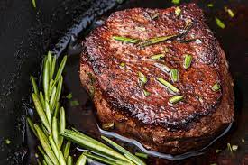

Home
Filet Mignon

Description
Filet Mignon is extremely tender because it comes from a muscle called the tenderloin
that cows rarely use. Tenderloin only makes for 1% of the total percentage of the
carcass. That makes Filet Mignon very rare, and therefore more expensive. Not all
Filet Mignons are the same.
Ingredients
- 4 10 ounce tick tenderloin beef filets (roughly 2 inches thick
- 2-3 tablespoons butter
- salt and pepper to taste
- 1/2 stick of Butter
- 1 tablespoon chopped fresh rosemary
- 1 tablespoon chopped fresh tarragon
- 1/2 tablespoon minced garlic
Directions
- Soften the butter in a microwave safe bowl until malleable, 10-15 seconds. Stir in herbs and garlic until fully mixed. Spoon the butter onto tin foil doing your best to reshape it to resemble a stick of butter. Place in refrigerator for about 10 minutes and remove 5 minutes before adding to the filet.
- Preheat the oven to 415° F. Remove steak from the fridge 30 minutes before cooking, this is to bring the steak to room temperature and ensure your cooking times are more accurate. Season both sides generously with salt and pepper.
- Add the plain butter to an oven safe cast iron skillet and turn up high, allow the skillet to become scorching hot first. Place the filets face down and sear undisturbed for 2 minutes. Flip the filets and sear for an additional 2 minutes. This will give your filets a nice seared edge.
- Transfer your skillet directly to the oven. [WARNING] skillet may be hot, handle with oven mitts. For rare, bake for 4 minutes. Medium rare, 5-6 minutes. Medium, 6-7 minutes. Medium well, 8-9 minutes. Remember, depending on the size of the steak, the more or less time it will take. This recipe is ideal for a 8-10 ounce portion, roughly 2-3 inches thick. Remove filets from the skillet and set on a plate, lightly cover with tin foil and let sit for 5 minutes before serving. This is important to bring your steak to its final serving temperature. Top with a slice of garlic and herb butter and serve.